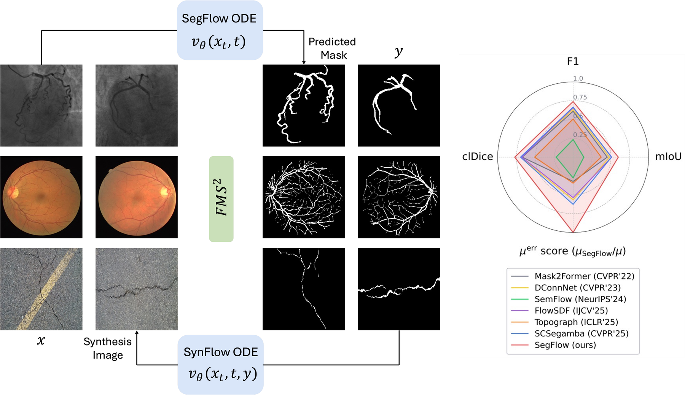
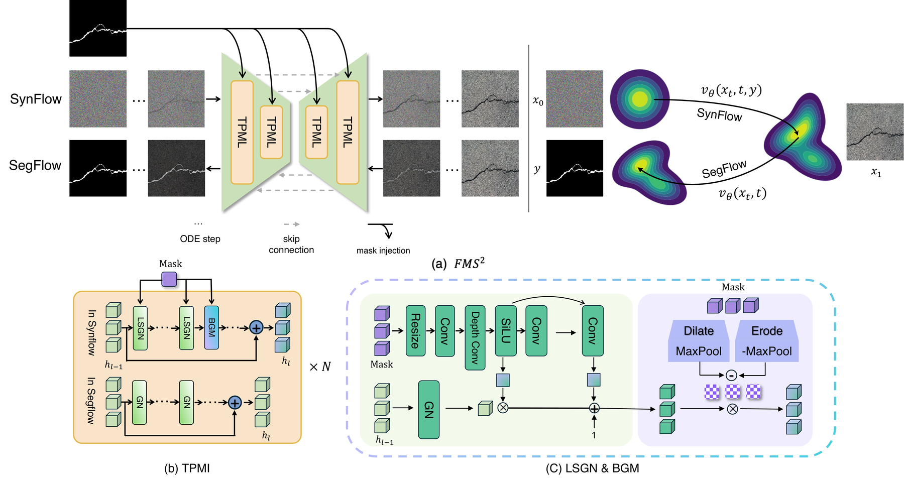
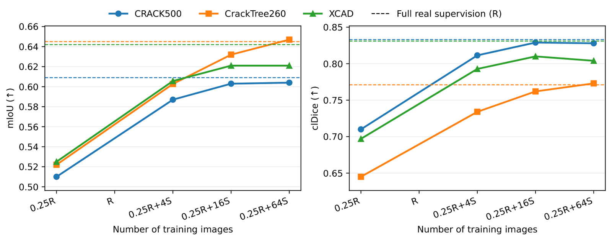

Shared Pathwise Objective
\[ x_t=(1-t)x_0+t x_1,\quad u_t^{\mathrm{target}}=x_1-x_0 \]
Both branches learn velocities over intermediate states. The loss supervises the transport trajectory, rather than only the final prediction.
University of Illinois at Urbana-Champaign

FMS2 is a unified flow-matching framework for thin structures such as infrastructure cracks and anatomical vessels, where one-pixel topology, high annotation cost, and domain shift make segmentation brittle. SegFlow is a 2.96M-parameter encoder-decoder that recasts segmentation as continuous image→mask transport: it learns a time-indexed velocity field and supervises the full mask-formation trajectory instead of only endpoint logits. SynFlow performs the complementary mask→image transport, using multi-scale mask injection, lite-SPADE GroupNorm, and boundary gating to preserve mask geometry while rendering realistic image-mask pairs. A controllable mask generator expands sparsity, width, and branching, enabling label-efficient and domain-robust training.
Method

\[ x_t=(1-t)x_0+t x_1,\quad u_t^{\mathrm{target}}=x_1-x_0 \]
Both branches learn velocities over intermediate states. The loss supervises the transport trajectory, rather than only the final prediction.
\[ \mathcal{L}_{\mathrm{SegFlow}} = \mathbb{E}\left[\left\|u_{\theta}(x_t,t) - (x_1-x_0)\right\|_2^2\right] \]
SegFlow transports the observed image into the binary mask, forcing thin branches to remain recoverable throughout ODE integration.
\[ \mathcal{L}_{\mathrm{SynFlow}} = \mathbb{E}\left[\left\|\mathbf{u}_{\theta}(\mathbf{x}_t,t\mid\mathbf{M})-\partial_t\mathbf{x}_t\right\|_2^2\right] \]
SynFlow reverses the direction: masks condition image synthesis, producing paired data that preserves geometry and pixel-level alignment.
Selected Results
+17.2% over the strongest prior mean IoU.
Sharper and more connected thin structures.
37.3% lower mean topological mismatch.
10k crack and 1k vessel image-mask pairs released by FMS2.
| Method | Venue | Mean mIoU ↑ | Mean F1 ↑ | Mean clDice ↑ | Mean μerr ↓ |
|---|---|---|---|---|---|
| Mask2Former | CVPR 2022 | 0.452 | 0.610 | 0.674 | 107.423 |
| DConnNet | CVPR 2023 | 0.482 | 0.635 | 0.693 | 90.895 |
| SemFlow | NeurIPS 2024 | 0.142 | 0.235 | 0.225 | 186.707 |
| FlowSDF | IJCV 2025 | 0.511 | 0.658 | 0.681 | 95.995 |
| Topograph | ICLR 2025 | 0.372 | 0.507 | 0.510 | 149.121 |
| SCSegamba | CVPR 2025 | 0.508 | 0.665 | 0.697 | 82.145 |
| SegFlow | Ours | 0.599 | 0.739 | 0.774 | 51.524 |
Same U-Net backbone and training protocol; only the loss changes.
| Loss / Supervision | Mean μerr ↓ |
|---|---|
| clCE | 71.348 |
| Skeleton Recall | 73.738 |
| SegFlow FM objective | 51.524 |
| Method | C500→Tree | LS315→C500 | Tree→C500 |
|---|---|---|---|
| SegFlow | 0.251/0.396 | 0.223/0.352 | 0.254/0.393 |
| SegFlow+DA | 0.259/0.408 | 0.229/0.358 | 0.257/0.395 |
| SegFlow+SynFlow | 0.305/0.444 | 0.411/0.566 | 0.340/0.489 |
Label Efficiency
With only \(0.25R\) real labels, adding SynFlow-generated image-mask pairs steadily closes the gap to the full real set \(R\), improving both mIoU and clDice across crack and vessel benchmarks.

| Dataset | Structure Type | Download |
|---|---|---|
| Crack500 | Infrastructure cracks | Download |
| CrackTree260 | Infrastructure cracks | Download |
| CrackLS315 | Infrastructure cracks | Download |
| XCAD | Coronary angiography vessels | Download |
| DRIVE | Retinal vessels | Download |
@article{asadi2026fms,
title={FMS$^2$: Unified Flow Matching for Segmentation and Synthesis of Thin Structures},
author={Asadi, Babak and Wu, Peiyang and Golparvar-Fard, Mani and Shah, Viraj and Hajj, Ramez},
journal={arXiv preprint arXiv:2603.13659},
year={2026}
}